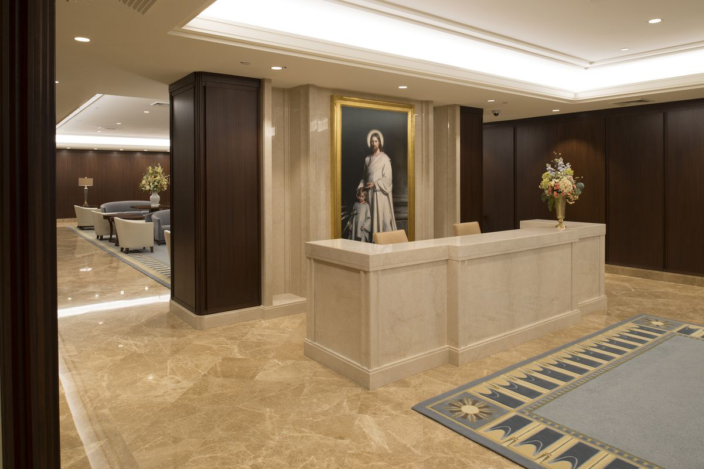
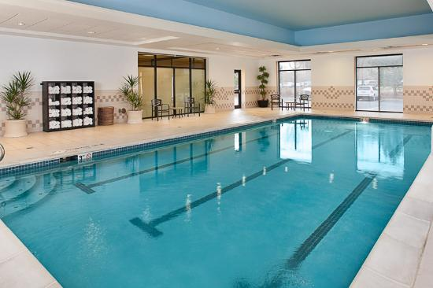
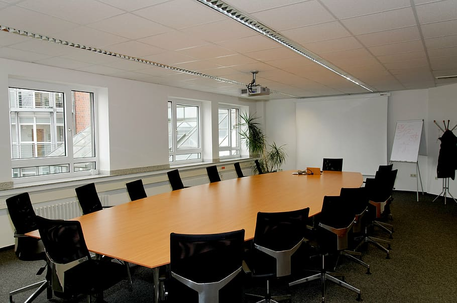

Services
Special Services

- Temple history themed reception and sitting area
- Business Center
- A wedding reception hall that can be easily customized with a simple catering menu
and kitchen access for food preparation and serving
- A playroom and low-cost, short-term babysitting services for the children of patrons
Free Amenities

- Breakfast
- Exercise/workout room
- Indoor pool
- WiFi high-speed internet access and smart TVs
- Parking
- Temple shuttle
- Family history consultation and family ordinance card service
For Full-Time Missionaries

- Free access to changing rooms and bathroom facilities for temple patrons who have traveled far and
need to change to and from church clothes.
- A family search center that supports family search and ordinance work.
- Long-term stay accommodations in kitchenette suites for full-time temple missionaries.